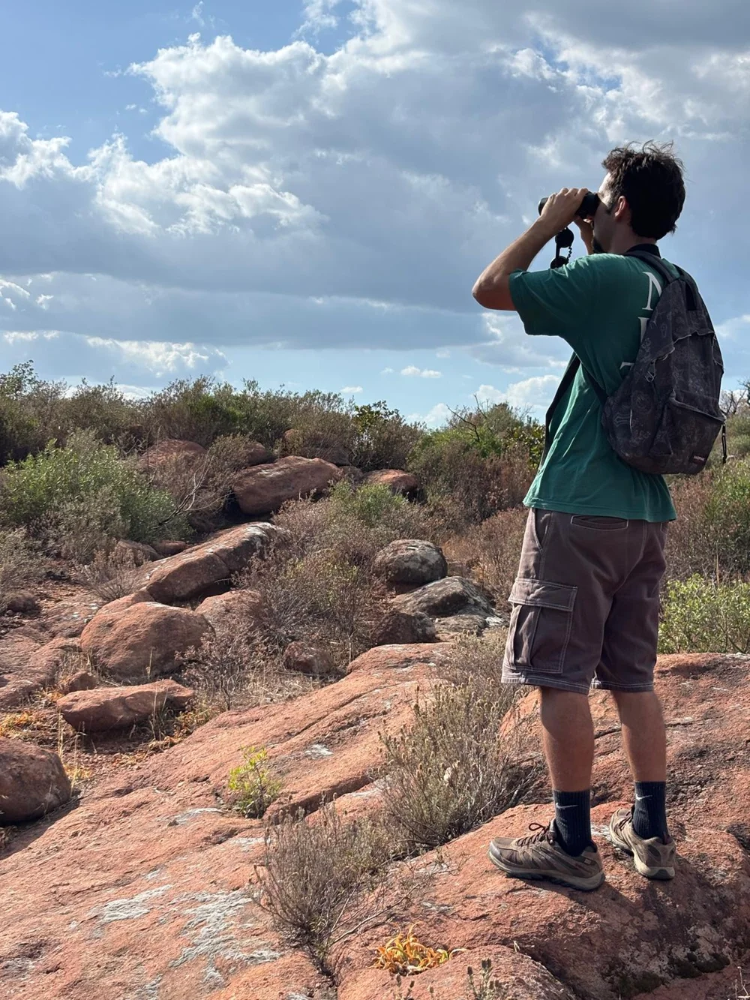

Portfolio universitaire · 2026–2027
Élias
Montesinos Ruiz.
L3 Sciences de la Vie · Parcours SEGE
Université de Toulon
Comprendre les animaux, leurs comportements et leurs liens avec leur milieu : c’est ce qui me conduit vers l’écologie de terrain et le suivi des espèces.
Ici, je raconte ce que mes projets m’ont appris : chercher, observer, parfois recommencer, et comprendre un peu mieux ce que j’ai sous les yeux.

Des situations concrètes
Mes questions prennent forme
dans mes travaux.

L1 · SAÉ 12
Observer la croissance des radis
Du montage expérimental aux mesures, puis aux limites du résultat.
Lire le travail
L2 · SAÉ 41
Comprendre les impacts d’ENSO
Délimiter mon axe dans une question collective.
Lire le travail
L2 · SAÉ 421
Lire un inventaire de Giens
Distinguer ce qui est observé de ce qui vient des sources.
Lire le travail
L3 · SAÉ 511
Relier les formations de Martigues
Confronter une représentation géologique à sa notice.
Lire le travailCe qui guide mon parcours
Apprendre à observer.
Prendre le temps de comprendre.
La faune sauvage m’intéresse particulièrement : les mammifères, dont les loups et les lynx, mais aussi les reptiles. Je souhaite poursuivre vers un master en lien avec l’écologie et la conservation, et développer ma pratique du terrain. Les travaux présentés ici montrent mes points d’appui et ce que je dois encore améliorer.
Les outils qui accompagnent mes travaux